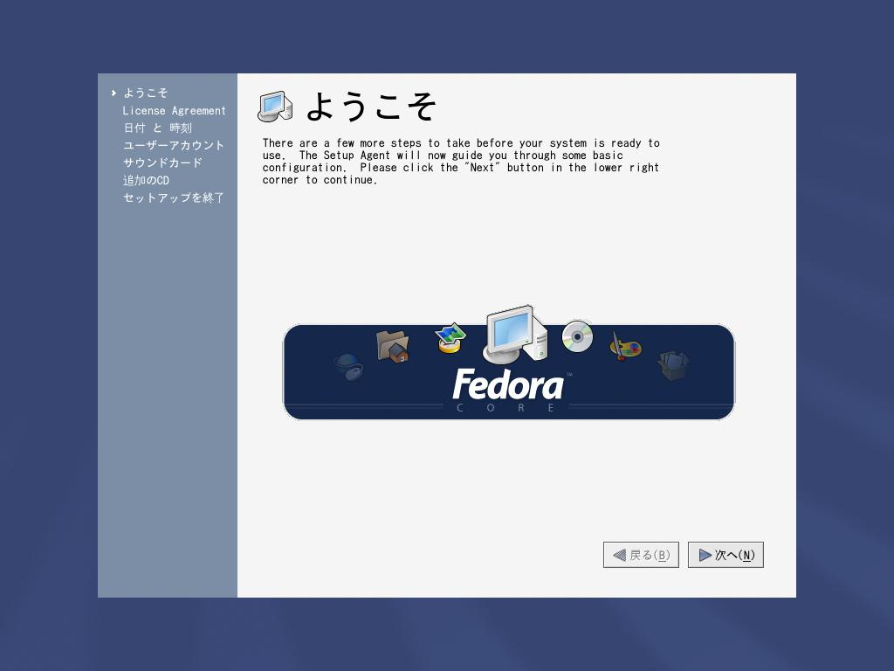

フェドーラ リナックス（Yarrow)のインストール手順について その（９）
これより以下の手順は、インストール直後にパソコンを再起動させた際、設定を求められる項目です。
２６．再起動直後、自動的に「ようこそ」画面が立ち上がりますので、次へ進んでください。

２７．Fedora Coreを利用するに当たっては、ライセンスの同意が求められます。Fedora Coreは、GNUに基づくオープンソフトウェアです。Yes, I agree to the License Agreementの項目にチェックして、先に進みます。
２８．日付と時刻を合せます。OSのシステム用の時刻設定ですので、正確に合わせてください。インターネット・タイム・サーバー(ITS)を利用して時刻を自動的に合わせることも可能です。
２９．ユーザーアカウントを設定します。